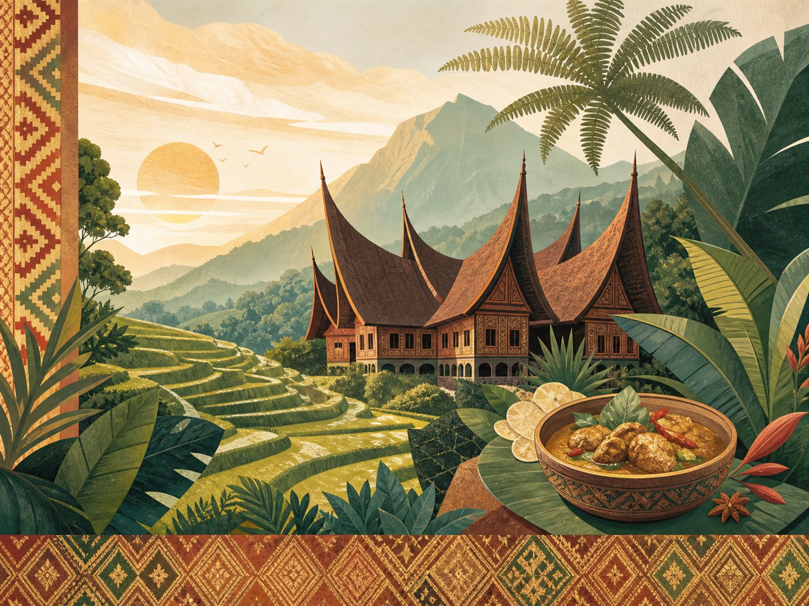

01 Amati sorotan budaya 2 menit
Sorotan budaya
Jejak budaya
1 / 3
Jelajahi kekayaan budaya dan bahasa daerah Indonesia.

Mulai dari konteks budaya, praktikkan bahasa, lalu kunci pemahamanmu dengan latihan.
Bangun konteks dari bentang alam, kuliner, tradisi, dan cerita yang diwariskan.
Pelajari ungkapan penting lewat kartu kosakata, kamus mini, dan latihan tulis.
Cocokkan frasa dan tuntaskan tiga pertanyaan singkat untuk menyelesaikan perjalanan.
Pilih frasa daerah, kemudian pilih arti bahasa Indonesianya.
Pertanyaan 1 dari 3
Selesaikan tujuh aktivitas inti untuk menguasai daerah ini.